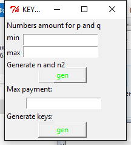
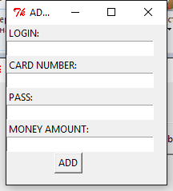
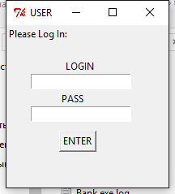
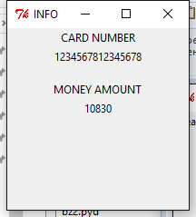
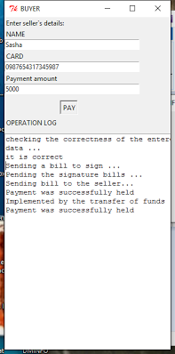

-
Банк генерирует числа n = pqи n2 = p2q2 как модули RSA. Число n используется как часть открытого ключа для основных платежей, n2 - часть открытого ключа для возвращения сдачи. Для генерации простых, а точнее псевдопростых, чисел p и q использовалась проверка Миллера-Рабина на простоту
-
После этого банк генерирует открытые ключи e для банкнот с номиналами от 1 до максимально возможного разрешенного платежа(может варьироваться),которые могут быть найдены как произведение всех нечетных простых чисел в степени ei, где S=(ek, ek-1,…,e1) - двоичное представление номинала банкноты. Для генерации списков простых чисел в определенных границах использовалось решето Эратосфена. Высчитываются закрытые ключи d и d2, обратные e по модулям phi(n), phi(n2), где phi - функция Эйлера, для этого используется расширенный алгоритм Евклида
-
Банк выбирает немультипликативную функцию f(N) для предотвращения получения новой купюры из двух других, прошедших подпись
-
Пользователь генерирует случайное число N: 0 N log (n) (обычно N генерируется в пределах от нуля до n, но для экономии времени и памяти были использованы меньшие границы)
-
После этого пользователь выбирает случайное число r: 0 r log (n) - затемняющий множитель для избежания распознания банком номера банкноты
-
Пользователь отправляет банку на подпись банкноту в видеs=f(N)*r^e mod n
-
Банк подписывает банкноту, т.е. возводит ее в соответствующую данной банкноте степень d и отправляет её пользователю: s = f(N)^d*r mod n
-
Пользователь снимает затемняющий множитель и получает подписанную банкноту s = f(N)^d mod n.
-
Если пользователь хочет получить сдачу, он сообщает об этом и вводит необходимое значение.
-
Далее таким же образом генерируется купюра N2 и подписывается в банке, но уже по модулю n2.
-
Пользователь отправляет банкноту(или банкноты) другому пользователю, а тот отправляет её банку на проверку.
-
Банк проверяет реестр использованных купюр на наличие в нем присланной купюры. Если не находит - то заносит её в реестр и зачисляется на счёт второго пользователя данную сумму, а с первого снимает её. Если находит, то завершает протокол с сообщением об ошибке.
- Операционная система: Windows
- New member registration
- Data generation
-
Для генерации модулей n и n2 вам понадобится ввести в первые два поля минимальное и максимальное кол-во цифр во множителях p и q(n = p*q), после чего программа сгенерирует* простые числа p и q соответствующего размера и высчитает n, n2 , а также функции Эйлера от обеих модулей. Приемлемые значения для размеров p и q лежат в пределах 50-100 знаков(генерация 15-30 секунд). Возможны значения и больше - все зависит от вычислительной мощности вашего процессора.
-
Для генерации открытых ключей необходимо ввести в последнее поле максимальную сумму платежа S. Далее программа для монеты каждого номинала рассчитает свой открытый ключ, который может быть найден как произведение всех нечетных простых чисел в степени ei, где S=(ek, ek-1,…,e1) - двоичное представление номинала банкноты. После этого программа генерирует закрытые ключи d и d2, обратные открытому ключу по модулю phi(n) и phi(n2) соответственно, где phi - функция Эйлера.
Рисунок 3 - генерация модулей RSA и ключей
- Account information
- Money transfer
Алгоритм работы электронных платежей
Системные требования
Инструкции
Для работы программы вам необходимо скачать и установить в любое удобное для вас место файл Install_SPS.exe. В папке, в которую вы произвели установку, будет находится папка Safe Payment System, в которой находятся два основных исполняемых файла - Bank.exe и Client.exe.
Bank.exe:
Предназначен для имитации работы банка и имеет две основные функции:
Рисунок 1 - основное окно программы BANK
Первая предназначена для добавления новых пользователей в систему. В ней, для добавления нового пользователя, вам необходимо ввести его имя(логин), пароль, номер банковской карточки(без пробелов) и сумму денег на счете, после чего пользователь будет добавлен*
Рисунок 2 - добавление нового пользователя
Вторая функция предназначена для генерации модулей RSA(n для основных трансферов и n2 для "копилки") и для генерации открытых и закрытых ключей для банкнот номиналом до введенного пользователем.
Client.exe:
Предназначен для перевода денежных средств с одного счета на другой. При запуске программы вам будет предложено на выбор две функции:
Рисунок 4 - главное окно программы USER
При выборе любой из двух функций вам будет предложено пройти авторизацию
Рисунок 5 - авторизация
Первая функция позволит вам получить доступ к информации о своем аккаунте(номер карты и кол-во денег на счете)
Рисунок 6 - информация о счете
Вторая функция позволит вам переслать деньги любому другому пользователю данной системы. Для этого вам необходимо будет ввести его имя, номер его банковской карты и сумму желаемого платежа. Если все будет сделано правильно, ваша банкнота будет отправлена на подпись, а вам будет предложено ввести желаемую сдачу(если таковая необходима). После этого ваша купюра будет проверена банком на подлинность и на единственность(т.е. будет проверено, не была ли купюра потрачена ранее). Если все пройдет хорошо, то ваша купюра будет зачислена в реестр использованных, а деньги с вашего счета будут перечислены на введенный вами.
При возникновении ошибок: неправильно введенное имя пользователя или номер карты, превышение максимальной суммы платежа, превышение суммы, находящейся на счету, попытка ввода отрицательного числа - программа в отдельном окне сообщит об ошибке и завершит свою работу.
Рисунок 7 - передача денежных средств
*Все данные: имена, пароли, номера карт пользователей, модули n, n2, ключи e и d , а так же все потраченные купюры хранятся в соответствующих файлах *.data в папке data